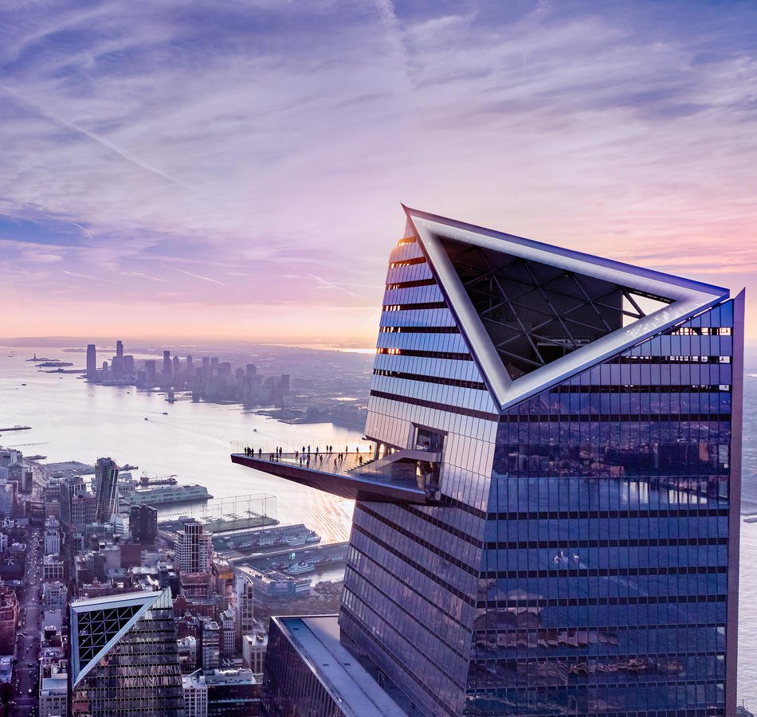
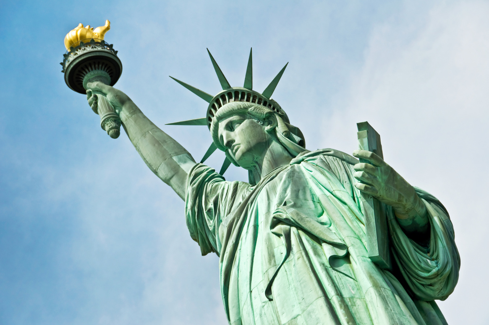
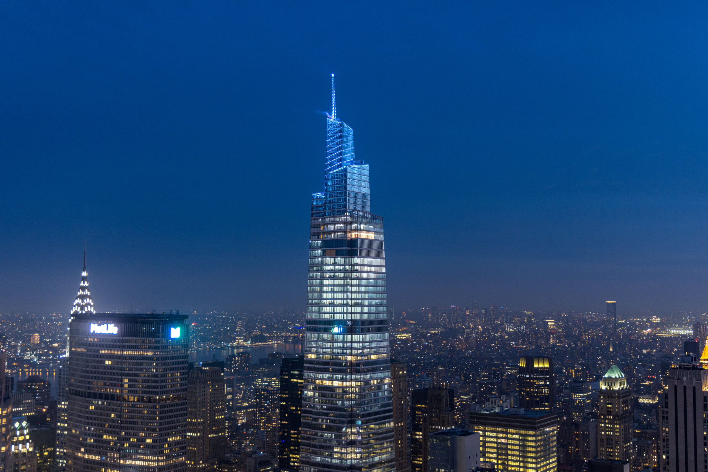
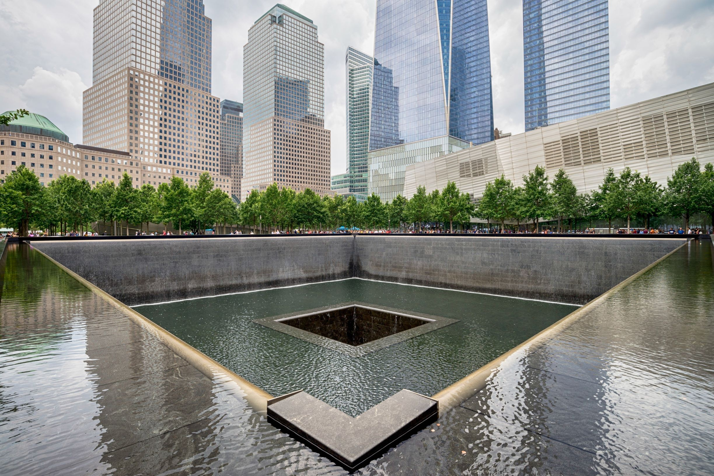

Miejsca do odwiedzenia
Edge
Wystający z setnego piętra taras widokowy ze szklaną podłogą, barem i 360-stopniowym widokiem na Nowy Jork.
Czytaj wiecejStatua Wolności
posąg na wyspie Liberty Island u ujścia rzeki Hudson do Oceanu Atlantyckiego w regionie metropolitalnym Nowego Jorku, nieoficjalny symbol wolności, Nowego Jorku i Stanów Zjednoczonych.
Czytaj wiecejOne Vanderbilt
Drapacz chmur znajdujący się w dzielnicy Lower Manhattan na Manhattanie w Nowym Jorku w Stanach Zjednoczonych
Czytaj wiecejMuzeum 11 Września
Muzeum w Nowym Jorku upamiętniające ofiary ataków terrorystycznych z 11 września 2001 roku, w których zginęło 2977 osób
Czytaj wiecej